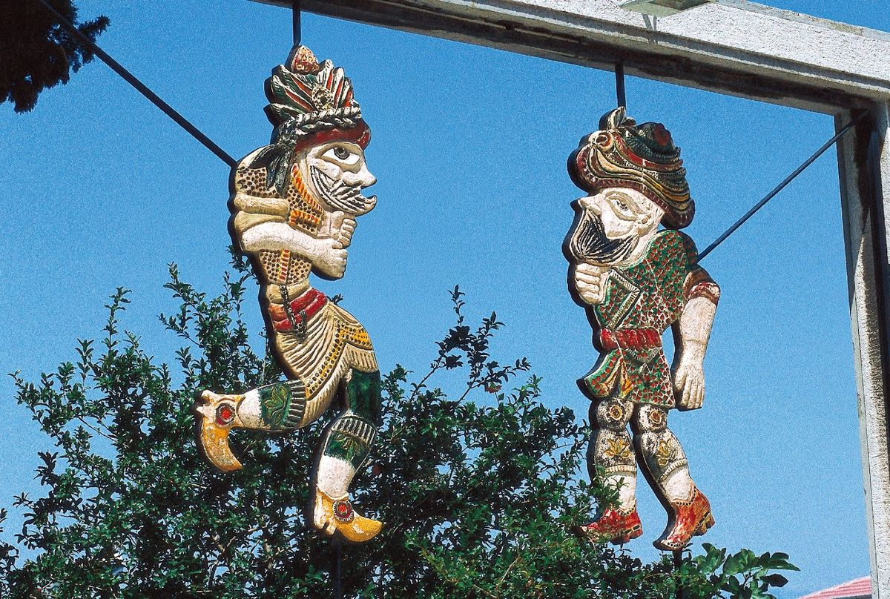
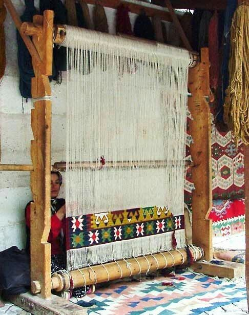
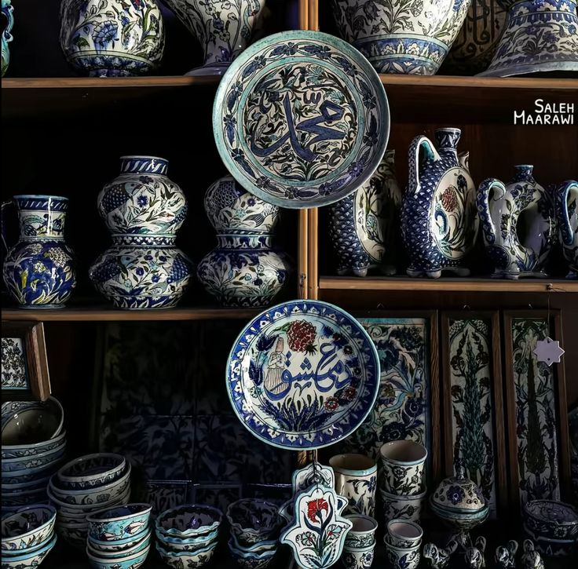
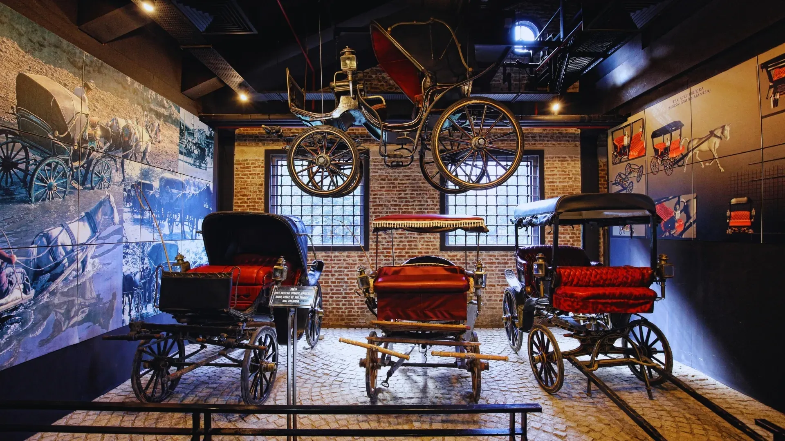
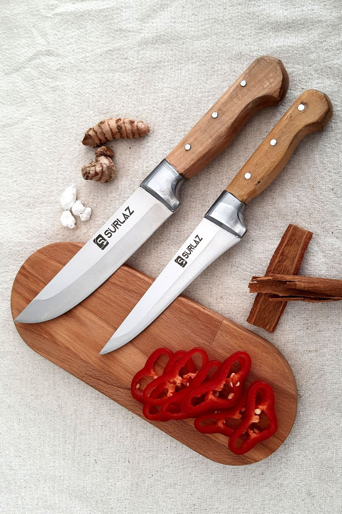

Karagöz ve Hacivat
Gölge oyunu geleneği ve Çekirge’deki Karagöz Müzesi.
Osmanlı'nın Başkenti · Yeşil Şehir · Tarihin Kalbi
Karagöz’den ipeğe, çiniden müzelere uzanan Bursa kültürü; hem somut hem somut olmayan mirasıyla öne çıkar. Aşağıda özet maddeler ve görseller yer almaktadır.

Gölge oyunu geleneği ve Çekirge’deki Karagöz Müzesi.

Fabrika-i Hümayun’dan günümüze taşınan ipek dokuma sanatı.

Dünyanın en nadide cami ve saraylarını süsleyen seramik sanatı.

Dünyanın en büyük tam panoramik müzelerinden biri; fetih hikâyesini üç boyutlu anlatır.

Tekerlekten otomobile ulaşımın tarihçesi.

Yüzyıllardır süregelen, elde dövülen çelik sanatı.